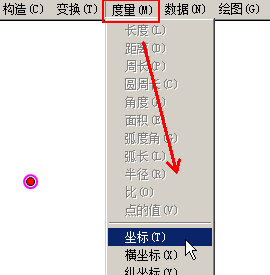
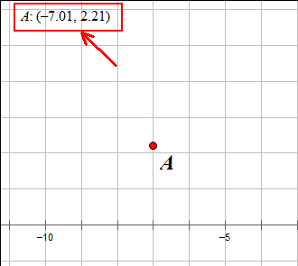
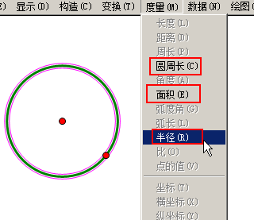
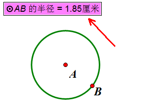
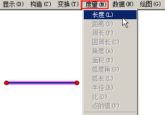
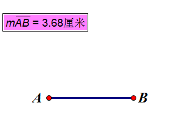
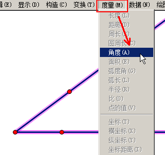
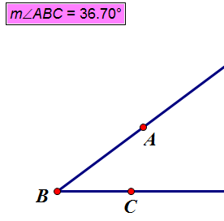

几何画板基础入门教程
作者：TeliuTe 来源：基础教程网
七、度量长度、角度等 返回目录 下一课在实际问题中，往往需要知道对象的参数，可以通过度量来获取；
1、度量
1）在左边选“画点工具”，在工作区作一个点，点菜单“度量”；

2）在菜单中，选择“坐标”命令，左上角给出点的坐标位置，工作区出现一个直角坐标系；

3）保存文件，关闭再新建文件，用左边“画圆工具”，画一个圆，点“度量”菜单；

4）圆可以测量圆周长、面积和半径，选择“半径”命令，左上角显示半径长度；

5）保存、关闭、新建文件，用左边的“线段工具”，画一条线段，点“度量”菜单；

6）选择“长度”命令，左上角显示了线段的长度；

7）保存、关闭、新建文件，用“射线工具”，画出一个角来，选择工具选中这个角的两边，点“度量”菜单；

8）选择“角度”命令，左上角显示出这个角的角度；

本节学习了度量点坐标、线段长度、圆半径和角度的基础知识，如果你成功地完成了练习，请继续学习下一课内容；
本教程由TeliuTe制作|著作权所有
基础教程网：http://teliute.org/
美丽的校园……
转载和引用本站内容，请保留作者和本站链接。